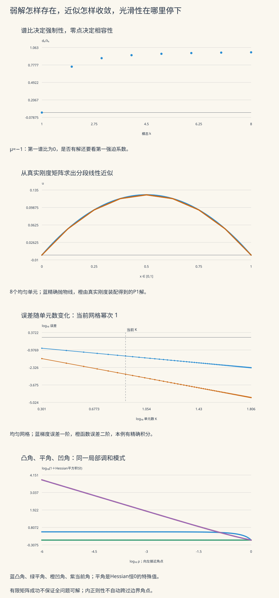

本页目录
现代 PDE III · 椭圆方程的弱解理论
一个折线函数不能处处求二阶经典导数，却可以作为椭圆方程的有限元近似。关键不是忽略折角，而是先说明方程如何作用于测试函数，再区分真正的弱解、有限维近似和剩余误差。本页沿着“存在唯一—可计算—误差—正则性”走完这条链。前置：分布与弱导数、Sobolev 空间和 Hilbert 空间的 Riesz 表示。
学习层：求解成功之后，还要核对什么？
| 模型 | 可以动手改变的条件 | 要回答的问题 |
|---|---|---|
| 正弦模态 | 零阶项、强迫、截断阶数与核系数 | 有限系统的成功是否代表全问题可解 |
| 一维有限元 | 单元数与网格分布 | 装配怎样产生近似，误差怎样随网格改变 |
| 扇形角点 | 开口角与观察内半径 | 一阶导数可积，二阶导数是否也可积 |
先完成四个预测。即使预测有误，也可以打开结果，对照后修改。正弦实验把参数写成 \(c=\pi^2\mu\)，因此整数负平方的 \(\mu\) 可以精确表示共振条件；小的非零余量仍按非共振计算。
无脚本参考账本
正弦例取 μ=0、N=5、M=128、F=0.85、τ=0.8，不归零任何模态；有限元取8个均匀单元；角点取开口3π/2，观察内半径0.001。有限和、解析尾界和精确公式分别标明。
| 量 | 对应公式的数值 |
|---|---|
| 正弦：强制常数 | 1 |
| 正弦：有界常数 | 1 |
| 正弦：梯度误差下界 | 0.00157345306525 |
| 正弦：梯度误差上界 | 0.00157345306983 |
| 正弦：完整残差下界 | 0.0355194854369 |
| 正弦：完整残差上界 | 0.0355195184809 |
| 参考曲线：一致余项界 | 1.82202392658e-08 |
| 有限元：梯度误差 | 0.0360843918244 |
| 有限元：L2误差 | 0.00142636082684 |
| 有限元：J(uh) | -0.041015625 |
| 有限元：能量差 | 0.000651041666667 |
| 角点：函数平方积分 | 0.706858346987 |
| 角点：梯度平方积分 | 1.57063924716 |
| 角点：Hessian平方积分 | 69.115038379 |
正弦的参考和只算到 M，尾界仍须保留；有限元的误差由整个区间积分计算；角点中的有限内半径不能代替趋近角点的极限。

1 · 从一条抛物线进入弱形式
先看可以算到底的问题：
积分并代入端点，得到 \(u(x)=x(1-x)/2\)。对端点为零的光滑测试函数 \(v\)，
消失的是测试函数在外边界上的值。最后的表达式只需要一阶弱导数。由稠密性，它延伸到所有 \(v\in H_0^1(0,1)\)。
在有界开集 \(\Omega\) 上，令 \(V=H_0^1(\Omega)\)，取梯度范数 \(\|v\|_V=\|\nabla v\|_2\)。Poincaré 说明它与完整 \(H^1\) 范数等价，因此 \(V\) 仍然完备。Poisson 问题的弱解是满足
的函数。\(F\) 可以是 \(V\) 上任意有界线性泛函，也就是这里所说的 \(H^{-1}(\Omega)\) 元素。若 \(f\in L^2\)，取 \(F(v)=\int fv\)，则
“对每个测试函数”不能省略。只检查几个测试函数，得到的是有限维问题。
例如取一个峰值1、顶点在 \(1/2\) 的帽函数 \(\varphi\)，它在左右两段的斜率分别为2、−2。让 \(u_h=a\varphi\)，在一维子空间中检验：
它在中点与抛物线相等，整条曲线却不同。两者的差仍会被更丰富的测试函数发现。
2 · Lax–Milgram 为什么同时给出存在、唯一和稳定
设 \(V\) 是实 Hilbert 空间，双线性型 \(B\) 满足
第一条是有界性，第二条是强制性。对任意 \(F\in V'\)，Lax–Milgram 定理给出唯一的 \(u\in V\)，使 \(B(u,v)=F(v)\) 对所有 \(v\in V\) 成立，且
证明。 Riesz 表示给出有界线性算子 \(T:V\to V\)，满足 \(B(u,v)=(Tu,v)_V\)。强制性与 Cauchy–Schwarz 给出
因此 \(T\) 单射。若 \(Tu_j\) 收敛，最后的估计使 \(u_j\) Cauchy，由完备性得到极限 \(u\)，再用 \(T\) 连续性得 \(Tu_j\to Tu\)；值域闭。
若 \(w\) 与值域正交，特别有 \((Tw,w)_V=0\)。强制性迫使 \(w=0\)，所以值域的正交补为零，值域稠密。闭且稠密意味着满射。最后将 \(F\) 用 Riesz 表为 \((w_F,\cdot)_V\)，解 \(Tu=w_F\) 即可；范数界也由上面的下界得到。证明不要求 \(B\) 对称。
应用到
时，要把假设逐项写清：\(A\in L^\infty(\Omega;\mathbb R^{n\times n})\)，\(c\in L^\infty(\Omega)\)，且一致椭圆
双线性型为 \(B(u,v)=\int A\nabla u\cdot\nabla v+cuv\)。它在 \(V\) 上有界；若 \(c\ge0\)，直接有 \(B(v,v)\ge\kappa\|v\|_V^2\)。若允许负值，记 \(c_-=\max(-c,0)\)，则
括号为正是一个充分条件；不为正只说明这个证书不能使用。非对称算子也适用 Lax–Milgram，但不能直接把双线性型当成内积。标准框架可对照 Hunter《PDE》§4.6–4.8。
若 \(B\) 还对称且强制，定义
将 \(v=u+w\) 代入并用弱方程消去交叉项：
因此弱解恰为唯一极小元。这个结论同时解释了能量误差公式；对非对称型或不定型，不能沿用这个最小化结论。
3 · 谱计算：强制性、可逆性与相容性各管什么
在 \((0,1)\) 上取
它们在 \(L^2\) 中正交归一，且 \(\int\phi_j'\phi_k'=\lambda_k\delta_{jk}\)。展开 \(u=\sum u_k\phi_k\)、\(f=\sum f_k\phi_k\)，弱方程化成
实验指定
并可将一个指定模态改为零。这个序列平方可和，因而确实定义一个 \(L^2\) 右端。
在梯度范数下，双线性型的谱比为 \(r_k=d_k/\lambda_k=(k^2+\mu)/k^2\)，所以
当 \(\mu>0\)，下确界1来自高频极限，并非某个有限模态取等。有界性常数可取精确上确界 \(\beta=\max(1,|1+\mu|)\)。因此 \(\mu>-1\) 时强制。
如果 \(\mu\) 不等于任何负整数平方，所有 \(d_k\) 非零。而且 \(r_k\to1\)，所以有限多个低模态检查后，就能得到
取 \(u_k=f_k/d_k\)，有
这构造了 \(H_0^1\) 弱解；逐模态方程也给唯一性。它还给出梯度范数与其对偶范数之间的逆算子范数 \(1/\gamma\)。即使 \(\mu<-1\)、\(B\) 不强制，非共振时仍能唯一可解。
反之，在 \(\mu=-j^2\) 时，第 \(j\) 行为 \(0\cdot u_j=f_j\)：
| 右端条件 | 全问题结论 | 核系数的含义 |
|---|---|---|
| \(f_j\ne0\) | 无解 | 没有任何系数能满足这一行 |
| \(f_j=0\) | 多解 | \(u_j\) 任意；指定它才选出一个代表 |
这是本对称模型的 Fredholm 相容性。一般非对称算子的可解条件要对伴随算子的核正交，不能自动用原算子的核替代。
接近共振但不在共振上时，\(u_j=f_j/d_j\) 很大但仍唯一。有限矩阵在通常欧氏系数范数中的条件数是 \(\max_{k\le N}|d_k|/\min_{k\le N}|d_k|\)；它与按梯度范数衡量的谱比不是同一个数。
再看一个能量上的区别：取 \(\mu=-1.2\)，第一模态的 \(d_1<0\)，于是 \(J(t\phi_1)\) 随 \(|t|\to\infty\) 趋于 \(-\infty\)。尽管非共振时弱解唯一，它也不是这个能量泛函的最小值。
一般域上的离散谱从哪里来？ 对有界域上的对称、强制 Dirichlet 型，解算子 \(K:f\mapsto u\) 是 \(L^2\to H_0^1\hookrightarrow L^2\) 的复合。第一步由能量估计有界，第二步由 Rellich 紧嵌入给紧性，所以 \(K\) 是紧算子。若 \(Kf=u\)、\(Kg=v\)，对称性给
因此它自伴；且 \((Kf,f)=B(u,u)>0\) 对非零 \(f\) 成立。紧自伴谱定理给出 \(L^2\) 正交基与正特征值
将微分算子 \(L\) 的定义域取为那些弱作用可由 \(L^2\) 函数表示的 \(u\in H_0^1\)，则
趋零的是紧解算子的特征值，趋无穷的是通常无界的微分算子的特征值。分离变量和正弦展开是一维可显式计算的特例；不能把有限个模态的数值结果当成这一一般定理的证明。
4 · 截断之后，怎样诚实地报告误差
Galerkin 空间 \(V_N=\operatorname{span}\{\phi_1,\ldots,\phi_N\}\) 只要求前 \(N\) 个系数方程成立。若 \(\mu=-4\)、\(N=1\)、\(f_2\ne0\)，有限系统可以解，完整方程却无解。实验分别显示两个结论；不存在的全解不填写系数、曲线或误差。
相容共振时，实验允许指定核系数 \(u_j=t\)。若 \(j>N\)，有限解没有这项；误差计算必须把它包括在内，不能悄悄把全解代表换成 \(t=0\)。
当有限系统可解时，它代回完整方程的残差是
这与有限矩阵内部的残差不同。后者解析上为零，浮点计算中会留下舍入误差；它不能代替整个方程的残差。
全问题可解且代表固定时，
第二项只有在正定条件下才能叫能量范数平方。含核或负方向时，它可能不能区分非零函数，甚至为负。
实验把前 \(M\) 项全部列出，再对 \(k>M\) 的无穷尾项加界。由于 \(M\ge64\)、\(-16\le\mu\le4\)，这一段的 \(r_k\) 全正。设
对下降函数作积分比较，任意 \(s>1\) 都有
例如梯度平方尾项满足
其他尾项只需逐项检查幂次：
| 尾项 | 单项表达式 | 使用的幂和 |
|---|---|---|
| 残差平方 | \(\tau^2/k^4\) | \(s=4\) |
| 梯度误差平方 | \(\tau^2/(\pi^2k^6r_k^2)\) | \(s=6\) |
| 有符号能量的高频尾项 | \(\tau^2/(\pi^2k^6r_k)\) | \(s=6\) |
| 函数误差平方 | \(\tau^2/(\pi^4k^8r_k^2)\) | \(s=8\) |
将已算部分加上尾项上下界，再开平方，才得到范数的上下界。高频能量尾项为正，不代表低频不定型的贡献也为正。这些是解析级数的剩余项界；页面用普通浮点计算有限和，没有把它包装成包含全部舍入误差的严格区间算术。
参考曲线画的是 \(\sum_{k=1}^M u_k\phi_k\)，其一致余项有
这是用 \(|\phi_k|\le\sqrt2\) 和 \(s=4\) 的尾界得到的。图采用 \(8M+1\) 个节点以分辨最高保留频率，端点解析值置为零。有限条曲线仍不是一般谱定理的证明。
5 · 有限元：从局部单元真正装配一个解
现在回到 \(-u''=1\)。取网格 \(0=x_0<x_1<\cdots<x_K=1\)，单元长度 \(h_i=x_{i+1}-x_i\)。每个单元上两个线性形函数的导数分别为 \(-1/h_i\)、\(1/h_i\)，所以局部刚度与载荷为
将相邻单元在同一个内部节点上的贡献相加，并去掉已知为零的两个端点，得到
实验实际装配并求解这个三对角系统。Thomas 算法先将下一行的下对角消掉，再从最后一个未知数回代；账本列出每一步乘子、主元、变换后的载荷与回代值。正定性保证精确算术下主元为正，程序也检查这个条件。精确节点值只用于事后核验。
为什么这里求得的节点恰好等于抛物线的节点？记 \(I_hu\) 为插值。在每个单元上，
而任意分段线性测试函数 \(v_h\) 的导数在该单元是常数，故
求和得到 Galerkin 正交性。有限系统唯一，所以 \(u_h=I_hu\)。这是本一维常系数 Poisson 问题的特殊性质，不能推广为“有限元总能给精确节点”。
对长为 \(h\) 的单元，抛物线与其弦的差在局部坐标 \(t\in[0,h]\) 上为 \(t(h-t)/2\)，因此
均匀网格 \(h=1/K\) 上，求和得到
实验还提供 \(x_i=(i/K)^g\) 的非均匀网格。这个解的二阶导数处处相同，给定单元数时，由凸性可知 \(\sum h_i^3\) 在均匀网格最小；把节点盲目堆在左端会增大本例的梯度误差。自适应网格需要针对真实误差结构，不能只追求局部更密。
浮点求解的节点与理想插值可能有小偏差，所以程序不直接拿上述理论误差替换实际误差。对单元中点 \(m_x\)、离散斜率 \(s_h\)，令 \(m=1/2-m_x\)。实际梯度误差的精确积分为
实际函数误差改写到中心坐标 \(z\in[-1,1]\) 后为 \(C+Dz+Ez^2\)，其中
使用 Legendre 多项式的正交性，
这是非负项之和，避免用两个接近的总能量相减来计算小误差。
6 · Céa 引理说明什么，能量等号又多用了什么
设 \(V_h\subset V\)，\(u\) 与 \(u_h\) 分别满足全空间和子空间的弱方程。两式相减：
令 \(e=u-u_h\)，对任意 \(v_h\in V_h\)，由有界性和强制性，
若 \(e\ne0\) 就约去一个范数，再取下确界；\(e=0\) 时显然成立：
这是一条准最佳逼近上界。若 \(B\) 对称正定，它定义能量范数，正交性进一步给出
于是能量范数下有精确最佳逼近。不同范数中的等号与上界不能混用。可对照 有限元课程 §5.4 的 Céa 引理。
本例 \(J(u)=-1/24\)，而 \(J(u_h)=\frac12\int|u_h'|^2-\int u_h\)。第2节的恒等式给出
页面把左右两侧分别计算，再列出其差。小残差可以帮助找实现错误；恒等式成立的理由仍是弱方程和对称性。
7 · 内部正则性为什么需要差商与局部截断
弱解一开始只要求一阶导数平方可积。要得到二阶导数，需要额外的系数正则性。例如一致椭圆的主部系数局部 Lipschitz、\(c\in L^\infty\)、\(f\in L^2\) 时，可得到 \(u\in H^2_{\mathrm{loc}}\)。先将 \(cu\) 吸收入右端，它仍是局部 \(L^2\)；再处理主部。
证明不能直接假设 \(u\) 已有二阶导数并拿它作测试函数。取 \(\Omega'\Subset\Omega''\Subset\Omega\)，光滑截断 \(\eta\) 在 \(\Omega'\) 为1且支集位于 \(\Omega''\)，定义
\(h\) 足够小时，\(v\in H_0^1(\Omega)\)，可以合法代入弱方程。离散分部积分把差商转移，主项由椭圆性控制 \(\int\eta^2|\nabla D_h^ku|^2\)。其他项来自 \(\nabla\eta\) 与 \(D_h^kA\)；Lipschitz 条件使系数差商一致有界。Cauchy–Schwarz 与 \(ab\le\varepsilon a^2+b^2/(4\varepsilon)\) 把包含高阶差商的项吸收到左边，得到独立于 \(h\) 的估计。
差商有界后，弱紧性给出子列；对测试函数转移差商并令 \(h\to0\)，识别其极限正是二阶弱导数。再用一次局部能量估计，可将中间的 \(H^1\) 项压到右端的 \(L^2\) 项，得到
的标准局部版本，常数依赖嵌套域、椭圆性和系数界。这里给出证明结构；完整差商估计可见 Hunter §4.11，其 \(C^1\) 系数证明中系数差商的控制也解释了 Lipschitz 版本。
全局 \(H^2(\Omega)\) 还要控制边界。例如在有界 \(C^{1,1}\) 域上，主部系数在闭包上 Lipschitz 且一致椭圆，\(c\in L^\infty\)、\(f\in L^2\)，齐次 Dirichlet 问题的弱解属于 \(H^2\)；若要同时保证唯一存在，还需前面给出的强制性等适定条件。非零边界值通常需达到 \(H^{3/2}(\partial\Omega)\)。这些是充分条件，任意 Lipschitz 域不能直接套用。可对照 Guermond 第24章定理24.19。内正则性没有自动穿过边界。
更高正则性可以逐级建立。例如所有系数光滑、\(f\in H^k_{\mathrm{loc}}\) 时，对方程再作差商并控制新的系数项，得到 \(u\in H^{k+2}_{\mathrm{loc}}\)。若系数与右端都光滑，再用高阶 Sobolev 嵌入，得到内部的光滑解。仅有光滑右端而没有相应的系数或边界条件，不能无条件作这种提升。
8 · 把凹角反例完整写出来
取开口角 \(\Theta\in(0,2\pi)\) 的扇形，极坐标为 \(0<r<1\)、\(0<\varphi<\Theta\)。令
两条直边上的函数值为零。极坐标 Laplace 算子给出
但外圆弧上的值还不为零。选径向 \(\eta\in C^\infty([0,\infty))\)，在 \(r\le1/4\) 恒为1、\(r\ge1/2\) 恒为0，令 \(u=\eta w\)。于是整个外边界都是零，且
右端支集远离角点，在扇形闭包上有光滑延拓。角点附近没有额外奇源。\(u\in H_0^1\)：函数连续趋零，梯度平方在角点可积；若在半径 \(\varepsilon\) 内再截去一点，所增加的梯度能量为 \(O(\varepsilon^{2\nu})\to0\)，随后可按零迹空间的逼近处理。
在 \(\eta=1\) 的邻域，梯度与 Hessian 的欧氏平方分别为
后一式可在正交极坐标标架中核对：两个对角分量为相反的 \(\nu(\nu-1)r^{\nu-2}\sin(\nu\varphi)\)，两个相等的非对角分量为 \(\nu(\nu-1)r^{\nu-2}\cos(\nu\varphi)\)。
乘上面积元 \(r\,dr\,d\varphi\) 后，一阶能量在零点有限。若凹角 \(\Theta>\pi\)，则 \(0<\nu<1\)，二阶积分却包含 \(\int_0 r^{2\nu-3}\,dr=\infty\)。例如 \(\Theta=3\pi/2\) 时 \(\nu=2/3\)，构造得到光滑右端与零边界的 \(H_0^1\) 弱解，却不属于 \(H^2\)。
这证明全局正则性可能失败，不表示凹角域上每个光滑右端都会产生非零奇性系数。取右端零，解零当然光滑。
实验观察未乘截断的局部模式在 \(\rho<r<1\) 上的积分：
平角 \(\Theta=\pi\) 时，\(\nu=1\) 且 \(w=r\sin\varphi=y\)，Hessian 恒为零。必须先处理这个退化系数，不能把分母为零机械解释成二阶积分对数发散。
数值实现用 \(\Theta/\pi=a\)，将 \(\nu-1\) 写成 \((1-a)/a\)，再用 expm1 计算接近零的指数差；相邻机器角度也不会因相近数相减而产生错误量级。图的纵轴为 \(\log_{10}(1+\text{积分})\)，既保留零值，也能显示跨尺度增长。\(\rho\) 是观察内半径，不是另加的一条 Dirichlet 边界。
9 · 四道迁移练习
练习1：一行有限方程能遗漏怎样的障碍？
取 μ=−4、N=1。分别令第二强迫系数非零与为零；相容时指定第二核系数为1。比较全问题、有限系统、梯度误差与能量误差。
展开完整答案：核方向是否进入测试空间
第一行乘子为 \(-3\pi^2\)，所以有限系统可解。完整问题还有第二行 \(0\cdot u_2=f_2\)：若 \(f_2\ne0\)，全问题无解，即使第一行矩阵残差为零也无济于事。
若 \(f_2=0\)，全问题多解。指定 \(u_2=1\) 后，\(N=1\) 的有限解仍没有第二项，因此误差至少含 \(\phi_2\)，其梯度平方为 \(\lambda_2=4\pi^2\)。这一项对双线性型误差的贡献却是 \(d_2\cdot1^2=0\)。因此失去正定性时，双线性型为零不能推出误差函数为零。若另有高频强迫，还须加上相应尾项；不能把这两个量误称为同一种误差。
练习2：一个帽函数与两个范数中的收敛速度
对 −u″=1、零端点条件，用K个均匀线性单元。手算K=2的节点值与两种误差，再解释为什么加倍单元数时，梯度误差减半、函数误差变成四分之一。
展开完整答案：从装配到整个区间积分
\(K=2\) 时只有中间节点未知，刚度为 \(2+2=4\)，载荷为 \(1/4+1/4=1/2\)，故 \(U_1=1/8\)。每个单元长 \(h=1/2\)，梯度平方误差总和为 \(2h^3/12=1/48\)，函数平方误差为 \(2h^5/120=1/1920\)；范数分别开平方。
一般均匀网格有K项，每项分别为 \(h^3/12\) 与 \(h^5/120\)，且 \(Kh=1\)，所以范数为 \(h/\sqrt{12}\) 与 \(h^2/\sqrt{120}\)。加倍K使h减半，分别得到二倍与四倍的改善。结论来自这个精确解的误差积分，不是看到双对数图上一条直线就断言所有问题同阶。
练习3：证明梯度误差的高频剩余界
对给定的强迫尾系数，推导第4节的梯度平方尾界；解释为什么“算到很大M”仍需要这一项。
展开完整答案：每个系数先平方再求和
高频系数为 \(u_k=\tau(-1)^{k+1}/(\pi^2k^4r_k)\)，乘 \(\lambda_k=\pi^2k^2\) 后， \(\lambda_k|u_k|^2=\tau^2/(\pi^2k^6r_k^2)\)。在 \(k>M\) 上，\(0<r_-\le r_k\le r_+\)，因此分别用 \(r_+^2\)、\(r_-^2\) 控制分母，再对 \(k^{-6}\) 作积分比较，即得两侧的五次幂界。
M变大使界变小，但有限和本身始终没有包含所有高频项。表中应分别保留已算部分与剩余项界，最后才合成范数。若全问题不相容无解，这个“全解误差”从一开始就未定义；尾界不能替一个不存在的解补出定义。
练习4：凹角反例为何不违反内部正则性？
检查开口3π/2的局部模式、径向截断后的右端，以及开口π时的特殊结论。为什么不能只写“解像r的某个幂”？
展开完整答案：角向边界、径向截断与导数积分
开口3π/2对应 \(\nu=2/3\)。角向因子 \(\sin(2\varphi/3)\) 保证两条直边为零，径向截断保证外圆弧也为零。右端只含截断的导数，支集位于远离角点的环带，所以数据光滑。角点的一阶能量为常数乘 \(\int_0 r^{1/3}\,dr\)，有限；二阶能量为常数乘 \(\int_0 r^{-5/3}\,dr\)，发散。
任意严格位于域内的紧子域都与角点有正距离，因此解在其中光滑，没有违反内部正则性。失败发生在趋近边界角点时。
若开口π，则ν=1，局部模式为y，所有二阶导数为零。只看径向幂而漏掉角向因子，会遗漏边界条件；只看积分分母而漏掉 \((\nu-1)^2\) 系数，会把线性特殊值错判为发散。
10 · 参数范围与后续方向
正弦实验限制 −16≤μ≤4、1≤N≤32、64≤M≤512；阶数必须为整数，归零模态为0–4。三个幅度允许0或绝对值在10⁻¹⁰⁰–2之间，以保留平方积分的数值量级。有限元单元数2–64、网格幂次1–4；扇形角与π的比值0.5–1.75，观察内半径10⁻⁶–1。隐藏模式的参数不参与当前计算，无效输入会明确提示并重新锁定结果。
这三页已经把分布定义、Sobolev 控制与椭圆求解连接起来，但并未穷尽 PDE。下一步可以沿 热核正则化与随机分布研究低正则性右端，或沿 奇异 SPDE追问非线性乘积何时需要新的定义。使用更前沿的理论之前，仍要先核对同样几件事：测试空间、边界条件、可解性、误差与极限。